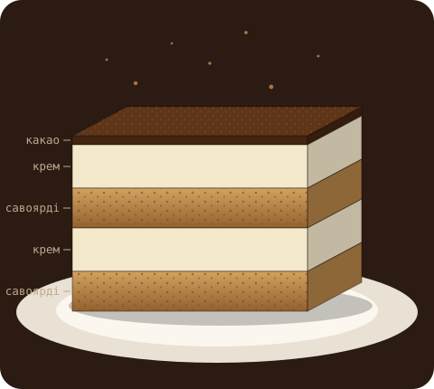
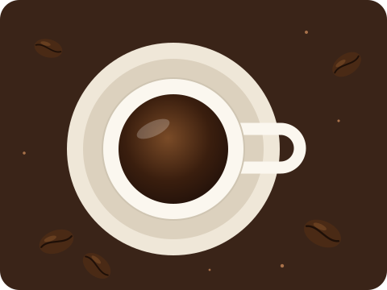
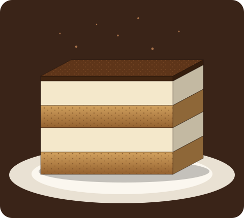
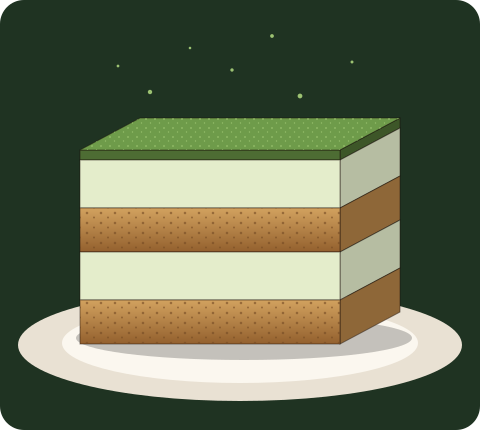
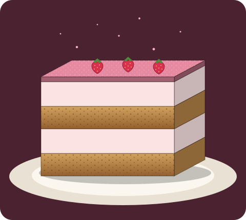
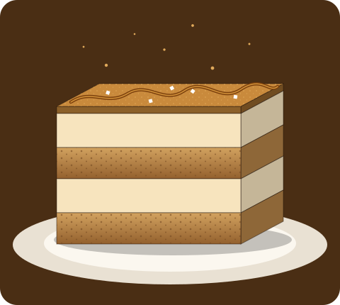
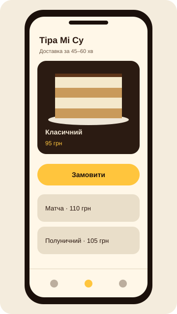

Назва
«Підніми мене» — це інструкція
«Tira mi sù» перекладається як «підніми мене вгору». Кава, цукор і жовтки справді бадьорять, тож назва чесно описує ефект.
Італійський десерт · без духовки · доставка по Києву
tira mi sù з італійської означає «підніми мене». Ми беремо еспресо, маскарпоне й савоярді та збираємо з них десерт, після якого понеділок здається не таким страшним.
Один шматок — і ти знову в грі.

Історія
Тірамісу — італійський десерт без випікання: печиво савоярді, змочене в еспресо, і крем із маскарпоне, які складають шарами й дають настоятися в холодильнику. З вигляду простий, але з характером і навіть із кількома конкуруючими легендами про походження.

Назва
«Tira mi sù» перекладається як «підніми мене вгору». Кава, цукор і жовтки справді бадьорять, тож назва чесно описує ефект.
Тревізо · 1960-ті — 1970-ті
Батьківщиною десерту найчастіше називають ресторан Le Beccherie в Тревізо (Венето). Кондитер Роберто Лінгуанотто, за цією версією, зібрав тоді рецепт, який ми знаємо сьогодні.
Фріулі · 1950-ті?
Регіон Фріулі-Венеція-Джулія стверджує, що десерт з'явився в нього ще в 1950-х. У 2017 році тірамісу внесли до регіонального переліку традиційних продуктів, а Венето з цим сперечається.
Сієна · легенда
Розповідають, що до візиту Козімо III Медічі в Сієні приготували «zuppa del duca» — герцогський десерт, схожий на тірамісу. Доказів мало, зате історія красива.
Жовтки йдуть у крем сирими, тому бери свіжі яйця з перевіреного місця.
Тірамісу не терпить поспіху: його збирають шар за шаром і залишають настоятися, щоб смаки подружилися. Тому це рідкісний десерт, який варто почекати. Його приносять на день народження, на зустріч після довгої розлуки і просто тоді, коли хочеться, щоб день склався краще.
Тірамісу — це десерт, а не суперфуд, але в ньому є що любити. Еспресо додає бадьорості, а яйця з маскарпоне дають білок і кальцій, тож це не лише цукор. А ще його не треба випікати: миска, міксер і кілька годин у холодильнику роблять усю роботу.
Смаки
Чотири смаки на одній основі з еспресо й савоярді. Порція — близько 150 г, ціна вказана за одну.

Той самий: еспресо, маскарпоне, савоярді й какао зверху. Для тих, хто не любить експериментів.
95 грн за порцію
Купити
Японський зелений чай замість какао. Менш солодкий, трохи трав'яний і дуже вайбовий.
110 грн за порцію
Купити
Крем із полуничним пюре й свіжі ягоди зверху. Літо, яке не залежить від календаря.
105 грн за порцію
Купити
Карамельна нитка, дрібка морської солі й кава. Солодке й солоне в одному шматку.
115 грн за порцію
КупитиЗамовлення
Відкрий розділ «Смаки» або застосунок і натисни «Купити» на картці, яка сподобалась.
Додай кілька порцій і смаків. Для компанії зручно взяти по одному кожного й куштувати всім разом.
Напиши, куди їхати, і обери зручний час доставки по Києву.
Кур'єр привезе десерт охолодженим, зазвичай за 45–60 хвилин. Лишається дістати ложку.
Замовляй у застосунку:

Питання
Не знаєш, який смак обрати, як зберігати десерт чи що замовити для компанії? Напиши нам, зазвичай відповідаємо протягом робочого дня.